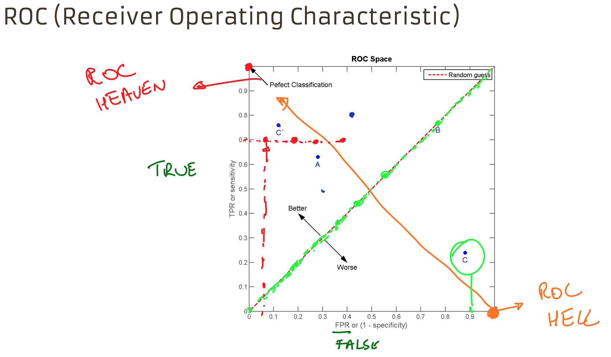

Logistic Regression
Tags: AI
Date: 2020-12-30
Type: Cursus topic
Related:
Source :
Questions : Q Logistic Regression
AI journey 🧠/Classification
Classificatie
Het model
$h_\theta(X)$ moet voldoen aan : $$0 \le h_\theta(X) \le 1$$
- $h_\theta(X)$ = de geschatte kans dat y=1 bij input x
- voorbeeld : $h_\theta(x)$ = 0.80
het model is voor 80% zeker dat het om een appel gaat
Processing
- Data inlezen
- Check op inconsistenties
- Check uitschieters
- Plot de data
- Splits op in features en targets
- Verdeel in een training en test set
- trainen van logistic regression model
- classificeren van nieuwe sample
- visualiseer de decision boundary
Feature engineering
niet lineair scheidbare dataset > hogere orde features toevoegen met PolynomialFeatures()
Underfitting en overfitting
Via regularisatie een goed evenwicht zoeken tussen underfitting en overfitting
In Scikit Learn linear_model.LogisticRegression
C = inverse regularisatie sterkte
- kleine waarden voor C zorgen voor een sterke regularisatie (underfitting)
- grote waarden voor C zorgen voor een zwakke regularisatie (overfitting)

Multi-class classification
One-vs-All
classificatie per category :
- gevoeliger voor niet gebalanceerde data
one-vs-one
$\frac{N (N-1)}{2}$ classifiers (N klasses) :
- rekenintensief
- minder gevoelig voor niet gebalanceerde data
Evaluatie classifier
confusion matrix
| CM | P' (predicted) | n' (predicted) |
|---|---|---|
| P (actual) | True positive | False negative |
| n (actual) | False positive | True negavtive |
Accuracy = $\dfrac{TP + TN}{TP + FP + FN + TN}$
Recall = $\dfrac{TP}{TP + FN}$
Precision = $\dfrac{TP}{TP + FP}$
F1 score = $\dfrac{2 * (Recall * Precision)}{Recall + Precision}$
Niet gebalanceerde data
ROC
recall = sensitivity
ROC (Receiver Operating Characteristic) -> evalueren binaire classifier

TPR (True Positive Rate) stijgt
FPR (False Positive Rate) daalt
Als we de treshold aanpassen dan zien we voor 0.5 :
en voor 0.6 zien we dat de accuracy beter wordt (TPR gelijk, FPR daalt) :
dit doen we voor verschillende treshold waarden en krijgen zo de ROC-curve.
En hieruit ook de auROC (Area under ROC)
Hoe hoger auROC hoe beter het model is. (lagere FPR, hogere TPR)
Om ROC curve te kunnen gebruiken moet je wel met probabiliteiten kunnen werken (ook bij logreg) met je classificatie.